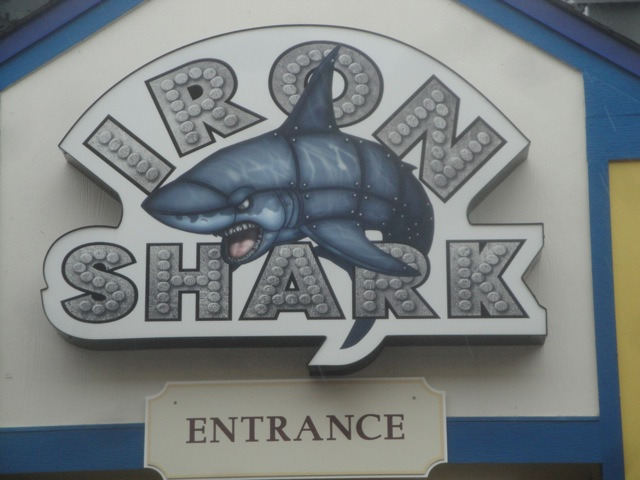
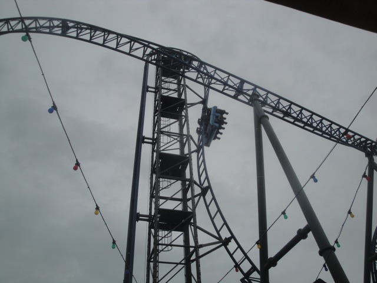
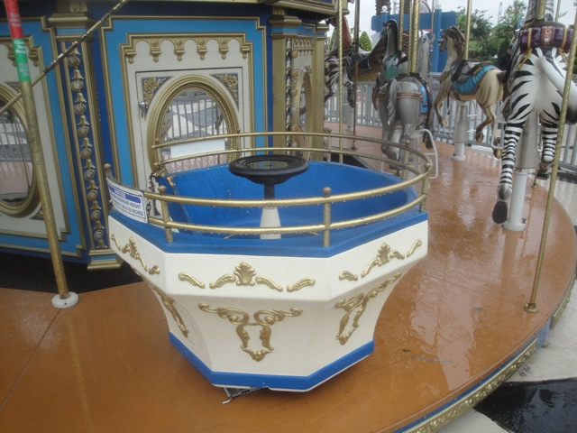

As much as we loved San Antonio, it was time to move on with the trip and say good bye to San Antonio and move onto the next portion of the trip. So now its time to say hello to Gavelston. And yeah, its raining at the moment.
Time for some fun at the Gavelston Pier.
Eew. I've never been a major fan of the beaches in Ventura, but they're certainly much better than these crappy oil-infested (Thanks BP) mucky Gulf of Mexico Beaches.
Keeping my fingers crossed that this drizzle doesn't f*ck up our plans.
YES!!!! Time for us to conquer Iron Shark!!!
Sorry Ferris Wheel fans. But the Galaxy Wheel is closed today.
"OH MY GOD!!! THIS IS AWESOME!!!! You have no idea how much Iapproveofthis." =)

Anyways, lets get on with the real reason we bothered coming to the Gavelston Pier. Iron Shark!!!

All right. So just how was the Iron Shark?
Honestly, it was great. It was on the short side, but this is definetly my favorite of the 3 Euro-Fighters I've ridden.
"Arr!!! You Coaster Enthusiast Mateys!!! Be careful with those cameras and look out for the water I'll be splashing over here!!!"
Oh yeah. There's more to this place besides Iron Shark.
Yeah. That looks like a good Star Flyer, but considering how tomorrow I'm riding the 400 ft one at Six Flags Over Texas, I'll save my money and wait.
Hey, we paid a good price to get into the Gavelston Pier. We're gonna get all the Iron Shark shots we can get.
Notice how Iron Shark is running with just a lap bar? Yeah, Euro Fighters are much better without those annoying OTSRs. Nickelodeon Universe and Canobie Lake Park, please take note of this when putting work into your Eurofighters.
"GRR!!! I'M THE IRON SHARK!!! I DEVELOPED MY IRON TO PROTECT MYSELF FROM ALL THE OIL IN THE GULF!!!! GIMME SOME REVENGE!!!!"
But seriously. For such a small coaster, Iron Shark packs A LOT into all it has to offer.
Why can't the Santa Monica Pier be this awesome!?
Yeah. Lets go walk out on the Jetty. A wonderfully smart move.
"Aww Damn!!! I can't go swimming in the brown oil-ridden mucky waters of the Gavelston Beach. What a bummer!!!"
Bye Gavelston Pier. I really enjoyed your park and thought that you were quite a nice pier. I definetly am looking foreword to my next visit to the park.
All right. Moving onto the next boardwalk park for credits, we're now at the Kemah Boardwalk.
Well we were good on Iron Shark. So hopefully we're good here.
I've heard all sorts of mixed things about Boardwalk Bullet. So I'm not exactly sure what to expect from this ride.
Yeah. There are other rides at the Kemah Boardwalk.

Ahh. There's a spinning teacup of death on this Carousel. That leads to some good times.
"Hey, you wanna head inside and get some sand from the Sand Bar?"
GOD DAMMIT!!!!! Boardwalk Bullet is down!!! Well lets not waste any of our time here and just head on up to Dallas early.
"Like a sir."
Well, for lunch, we decided to stop on over at a Sonic since they seem to be everywhere except for California (actually, I checked their website and there is a Sonic in Palmdale. So there is one fairly close to me. The only problem is that I'd have to go to Palmdale, which sucks ass). But yeah. Sonic is really freaking good. Hope they expand more in Southern California besides just Palmdale.
We made it to Dallas and are now at the Zero Gravity Thrill Park. Why are we here?
That's right. IT'S SCAD TOWER TIME!!!!!! =)
This is one of the craziest attractions ever. It literally just drops you into a net with no saftey harnesses or anything.
As someone who's been skydiving, bungee jumping, and has cliff jumped from as high as 70 ft, this is truely a terrifying experience.
The "Oh Sh*t!!!" moment right as you're let go to freefall into the net.
See just how crazy the SCAD Tower is in our raw footage video of this insane attraction.
After our crazy SCAD Tower Experience, we went through a brief rainstorm where it just started POURING for about 15 minutes, and then it stopped.
Dallas got more inches of rain during this 15 minute storm than all of Southern California gets in an entire year.
We then met up with our Couchsurfing host in Dallas, hung out with him and he took us out to this Pizza Place in Dallas that has great pizza and serves great locally brewed beers.
And then he just showed us around Dallas. It was a great night and once again, I just want to say thank you for everything.